Design Editor
The Design Editor provides a
visual environment for editing InstallOptions dialog scripts. It is
registered to be the default editor for INI files. A core attribute of
the design editor is that it preserves the general formatting of a
loaded INI file, i.e., it does not
change the file structure: it preserves comments, blank lines as
well as the order of sections and lines. However, the design editor has
the restriction that a script with errors must first be corrected using
the Source Editor
before it can be opened using the design editor.
The design editor offers the following features:
- Graphical User Interface
- Graphical Editing Commands
- Creating and Modifying InstallOptions Controls
- Outline and Overview
Graphical User Interface
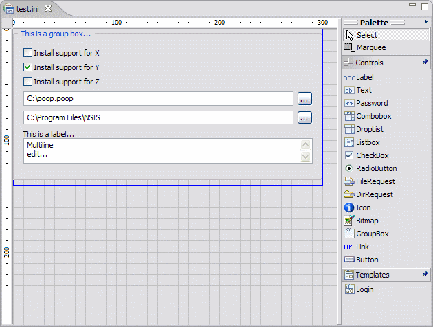
- Canvas
- The canvas provides the visual representation of the InstallOptions dialog. Controls can be added or removed directly on it, displaying what the overall design looks like as it evolves. ← Back
- Palette
- The design editor includes a
palette of controls, templates and selection tools.
By default, the palette displays to the right of the canvas, but can be
moved to the left of the canvas by simply dragging it there. The
palette can be
also resized or collapsed as needed. If desired the palette can be
configured to be collapsed by default.
- Selection Tools Group
- The palette includes the following selection tools:
- Selection - the default cursor tool, used for selecting existing controls in the canvas. Multiple controls can be selected by holding down the Ctrl key.
- Marquee - a selection tool that can be used to drag a rectangular selection area. All components that lie completely within the selection rectangle are selected.
- Control Creation Tools Drawer
- The Controls drawer contains creation tools for all controls supported by the InstallOptions plugin included in the version of NSIS configured in EclipseNSIS. In order to determine what controls are supported, please consult the InstallOptions Readme file. In addition to these prebuilt controls, the EclipseNSIS InstallOptions editor provides an "Unknown" control type. This can be used to work with custom controls, e.g., in a modified version of InstallOptions. However, for "Unknown" controls, the EclipseNSIS InstallOptions editor only allows editing of the common attributes of all InstallOptions controls as defined in the InstallOptions Readme file.
- Templated Creation Tools Drawer
- The Templates drawer contains creation tools which use templates. A template consists of one or more
controls combined together into a reusable group. In order to create a template, simply select the controls to be
grouped on the canvas and either select the Create Template...
icon (
 ) on the toolbar or right click with the mouse
and select the Create Template... item on the resulting popup menu. This will
display a template creation dialog which can be used to specify a name and description for the template, as well as to indicate whether
the template is to be enabled. A template which is not enabled will not be available in the Templates Drawer.
) on the toolbar or right click with the mouse
and select the Create Template... item on the resulting popup menu. This will
display a template creation dialog which can be used to specify a name and description for the template, as well as to indicate whether
the template is to be enabled. A template which is not enabled will not be available in the Templates Drawer.
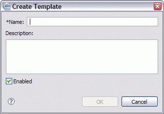
Palette & Templates Settings
To customize the design palette or manage templates, right click on the palette and select the Settings... in the popup context menu. This will open the Palette & Templates Settings dialog:
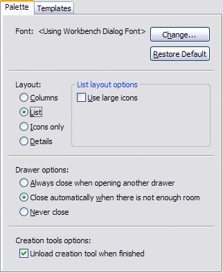
Palette Settings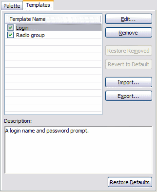
Templates SettingsPalette SettingsThe Palette settings page is used to customize the behavior of the design editor palette.
- Font
- Customize the font used to display palette components. ← Back
- Layout
- Customize the layout used to display palette components. For the list layout, large icons for palette components can be optionally displayed, if available ← Back
- Drawer Options
- Customize the collapse behavior of palette drawers. The default behavior is to close all drawers other than the currently selected drawers if there is not enough space on the palette to completely display all palette drawers. ← Back
- Creation Tool Options
- Customize the behavior of creation tools. The default behavior of a creation tool, when using the select and click method of creating controls, is to immediately unload upon control creation- i.e., to create another control, the creation tool must once more be selected before clicking on the canvas. If this option is deselected, the tool remains active until either the escape key is pressed or another tool is selected. ← Back
Templates SettingsThe Templates settings page is used to manage templates. A template consists of one or more controls combined together into a reusable group. Template creation is described above. There are three types of templates:
- Built-in: Templates which are prepackaged along with the plugin.
- Custom: Built-in templates which have been modified by the user.
- User-defined: Templates which have been created by the user.
- Templates
- Displays the list of templates. Only checked templates will be displayed in the palette . To disable/enable a template uncheck/check the checkbox associated with it The following buttons allow manipulation and configuration of templates. ← Back
- Remove
- Remove all selected templates. ← Back
- Restore removed
- Restore any built-in or custom templates that have been removed. ← Back
- Revert to default
- Revert all selected custom templates back to their original built-in states. ← Back
- Import
- Imports templates from the file system. ← Back
- Export
- Exports all selected templates to the file system. ← Back
- Description
- Displays the description of the selected script template. ← Back
- Restore Defaults
- Removes all user and custom templates and replaces with built-in templates. ← Back
- Drawing Tools
- To help draw accurately, the
design editor has a pair of rulers, a grid, and guide lines, as well as
the ability to snap and glue. The ruler, grid, snap, and glue settings
can be changed at any time without affecting objects already placed in
the drawing. The settings apply to the current InstallOptions
script. Each InstallOptions script can have different settings for the
rulers, grid, snap and glue. These settings can be customized using the
Grid, Snap & Glue
dialog. Finally, the design editor provides an outline of the
InstallOptions dialog.
- Grid - The grid consists either of horizontal and vertical lines or regularly spaced dots on the canvas. It helps line up controls as they are added to the canvas.
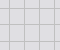
Grid Lines
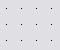
Grid Dots- Rulers - The rulers are along the top and left edges of the canvas. They help measure distances. The rulers' units match the InstallOptions script units.
- Guides - Guides are used to align controls. A guide is like a customizable grid line. A guide is created by simply clicking on the ruler. It can be removed by clicking on the guide and dragging it off the ruler. Once a guide has been created it can be dragged to any position on its ruler.
- Snap - Snap is the ability to force objects to line up. Snap makes it easier to create an accurate drawing. The design editor supports snapping to grid lines, guide lines or to other controls on the canvas. A red line appears on the canvas as an indication when a control is snapped.
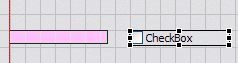
- Glue- Glue is the ability of a group of controls to stay together when being moved. This is accomplished in the design editor via the guides. By default, a control is automatically glued to a guide when snapped onto it. Then, anytime the guide is moved, all controls glued to it move as well.
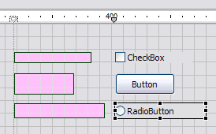
- Dialog Size- This is an outline of the InstallOptions dialog size. It serves as a guide for placement of controls on the dialog.
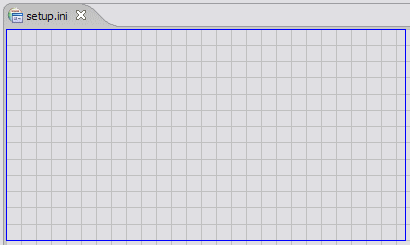
← Back
Graphical Editing Commands
The design editor includes a rich set of graphical editing commands for simplify and improve the experience of creating and editing InstallOptions scripts.
These can be accessed either from the InstallOptions menuitem in the main menu bar, by right-clicking in the editor to display the editor popup menu or by using the editor toolbar. Most commands also provide keyboard shortcuts.
- Show/Hide Drawing Tools
- These menuitems can be used to show or hide drawing tools.
The drawing tools currently supported for show/hide are:
← Back
 Guides
Guides- Grid, Snap & Glue
- Provides a dialog box which
can be used to custom grid, snap & glue settings for the
InstallOptions script currently being edited. These settings are
persisted when the file is closed and restored when it is reopened.
Please note that any changes to Snap & Glue settings will be
applied to any future operations to controls on the dialog- e.g., if
the "Glue to Guides" option is unchecked, any controls currently
glued to guides will stay glued until they are detached or the
guides are deleted.
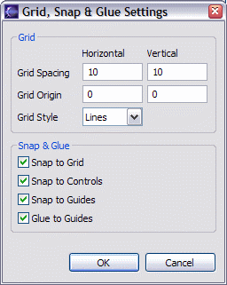
← Back
- Align Controls
- Aligns selected controls with
the last selected control (the one that displays black selection
handles). If the selection or marquee tool was dragged around a group
of controls to select them, they are aligned with the control with the
lowest Z-order (also indicated by black selection handles).
The following alignments are supported:
 Align Left
Align Left Align Center
Align Center Align Right
Align Right Align Top
Align Top Align Middle
Align Middle Align Bottom
Align Bottom
- Match Control Sizes
- Matches dimension(s) of the selected controls with
the last selected control (the one that displays black selection
handles). If the selection or marquee tool was dragged around a group
of controls to select them, they are matched with the control at the
back of the stacking order (also indicated by black selection handles).
The following size matchings are supported:
 Match Width
Match Width Match Height
Match Height Match Height and Width
Match Height and Width
- Distribute Controls
- Equally distributes the selected controls horizontally or vertically. The following distributions are supported:
 Distribute Horizontal Interstices (space between controls)
Distribute Horizontal Interstices (space between controls) Distribute Left Edges
Distribute Left Edges Distribute Horizontal Centers
Distribute Horizontal Centers Distribute Right Edges
Distribute Right Edges- 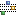 Distribute Vertical Interstices (space between controls)
 Distribute Top Edges
Distribute Top Edges Distribute Vertical Centers
Distribute Vertical Centers Distribute Bottom Edges
Distribute Bottom Edges
- Arrange Controls
- Changes the Z-order of the
selected controls with respect to the unselected controls. The Z-order
determines which controls are in front of other controls. The top of
the
Z-order is the control which is in front of all other controls. The
following arrangements are supported:
- Send Backward
- Send to Back
 Bring Forward
Bring Forward- Bring to Front
- Lock/Unlock Controls
- Locks/Unlocks the
selected control(s). A locked control cannot have its position
(left, top, right and bottom attributes) modified using the design editor (they can,
however, be modified using the source editor). This is useful to prevent accidental
repositioning of controls. A locked control can be distinguished from an unlocked control
by the difference in the handles drawn when it is selected:
The following commands are provided: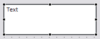
Unlocked
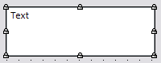
Locked
 Lock
Lock- Unlock
- Reset Dialog Size
- Changes the size of targeted InstallOptions dialog UI. The selected size is shown when the Dialog size outline drawing tool is displayed. The available dialog sizes and the default can be configured using the Preferences dialog.
- 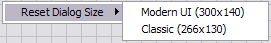
- ← Back
- Refresh
 Refresh the entire InstallOptions dialog design diagram. It is useful
when the diagram is not painted properly because of UI interference
with the painting loop. ← Back
Refresh the entire InstallOptions dialog design diagram. It is useful
when the diagram is not painted properly because of UI interference
with the painting loop. ← Back
- Preview
 Preview the current InstallOptions script using either the Standard (Classic) UI or the Modern UI.
The preview language may also be selected. ← Back
Preview the current InstallOptions script using either the Standard (Classic) UI or the Modern UI.
The preview language may also be selected. ← Back
Previous | Contents | Next
Copyright © 2004-2010 Sunil Kamath (IcemanK).